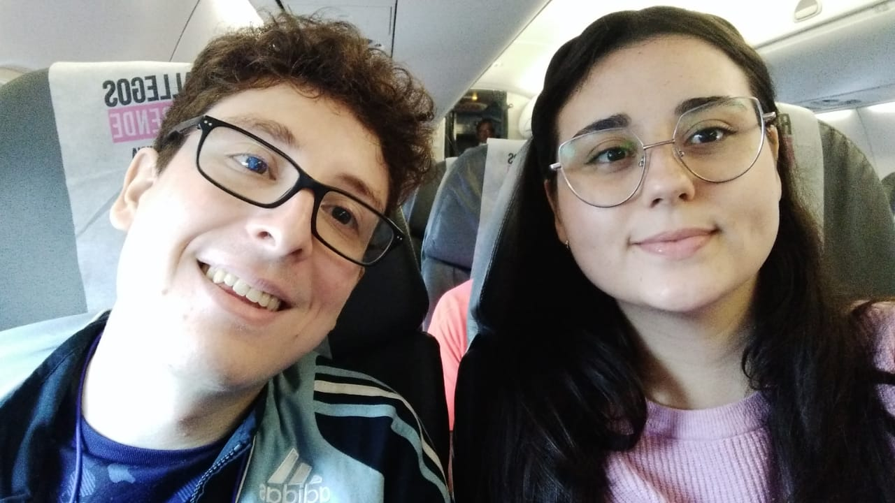

¡HICIMOS UN VIAJE JUNTOS! ¡Y vaya viaje! Viajamos muchisimas horas, bastante incómodos en ese avión de Level hacía Barcelona. Se que Barcelona no ha sido tu ciudad favorita,
soy consciente que no te ha gustado nada de nada la verdad, pero bueno, tuvimos la experiencia de viajar juntos, pasear muchisimo, caminar, ¡ir a ver a tu tia y tristan!, anduvimos en caballo
(la yegua que me tocó montar en varias ocasiones casi me asesina), anduvimos en la lancha manejada por Jimmy, vimos delfines y un show hermoso de drones y luces por las festividades de Herradura.
Creo que, a pesar de que la Barcelona como ciudad no te haya gustado nada, creo que hemos tenido muchisimas experiencias hermosas y momentos compartidos preciosos, como cuando anduvimos en Bicicleta,
vimos el atardecer desde la cima de la colina donde estaba el Park Güell y asi, claramente nos quedaron millones de lugares y cosas por visitar y hacer, si algún día quieres volver a viajar conmigo,
estaré más que feliz de ir a ellos contigo.
Este viaje también significo un punto de inflexión, el punto en el que nos separamos, tuvimos nuestra triste y dolorosa despedida en el aeropuerto de Barcelona, que significo también el inicio de la
relación a distancia, la misma que la llevamos delante por 1 año y 4 meses. Se que no ha sido fácil, se que YO no he sido fácil llevar en la relación a distancia,
soy consciente, como te dije en la carta de las cosas que no hice, el no abrirme, no saber comunicarme y no llevarla tan bien como pensé que podría llevarla.
Sinceramente, si tuviera la oportunidad hoy en día, me hubiera vuelto 100% en ese avión con vos, estoy seguro de ello, estar contigo cerca, compartir momentos, risas, eventos y más, es mucho más importante
que cualquier trabajo o una ciudad con más accesibilidades. Lastimosamente no puedo cambiar el pasado, pero si sé que hoy no haría lo mismo dos veces, por eso mismo, estaría a tu lado todo el tiempo que haga falta
y si quiero irme a vivir a algún otro lado, sería cuando tu también estés lista para hacerlo y asi lo realizamos juntos, listos para enfrentar el mundo en compañia mutua.
Para la canción de esta flor, creo que no viene nada mejor, que una canción de viaje, que pueda ser un buen augurio para que tengamos nuevamente viajes juntos.